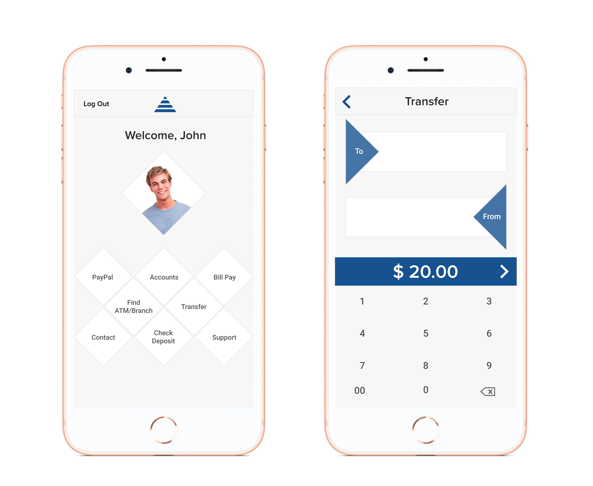
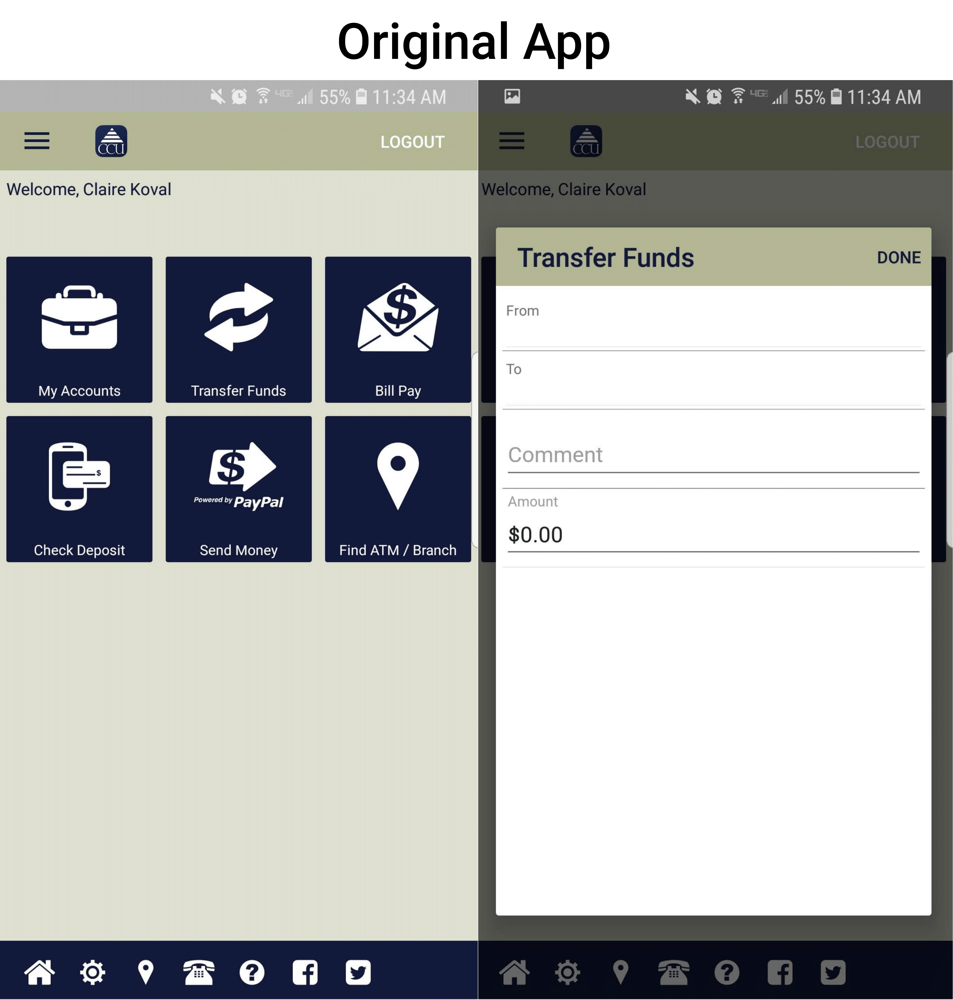
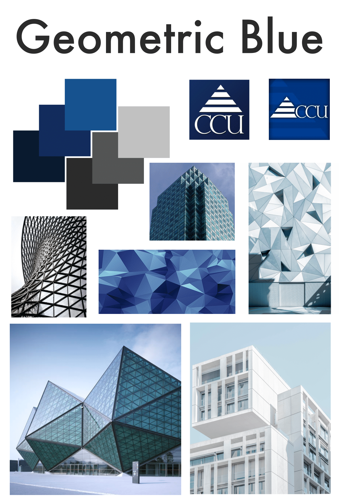

A UI/UX redesign of two key screens in the Corning Credit Union banking app. Created in Adobe Illustrator in the fall of 2018 for New Media Design Elements. The goal was to streamline the interface and improve usability without altering core functionality.
Analyzed the existing app’s layout and pain points, then proposed a cleaner visual hierarchy, simplified navigation, and improved readability. The redesign maintains the same features while reducing cognitive load. Below, you can compare the original app with the redesign and see the moodboard that guided the aesthetic direction.


